Changing an initiative's details
Create templates for Facebook and email messages
Create and save new announcements
Change VoIP (call) settings
Create a social mailing template
Create and edit a new call script
Create and edit a new campaign
Volunteer stats
Customizing invite emails
Creating and editing a welcome message
First, click on the "Initiatives" tab in the header.
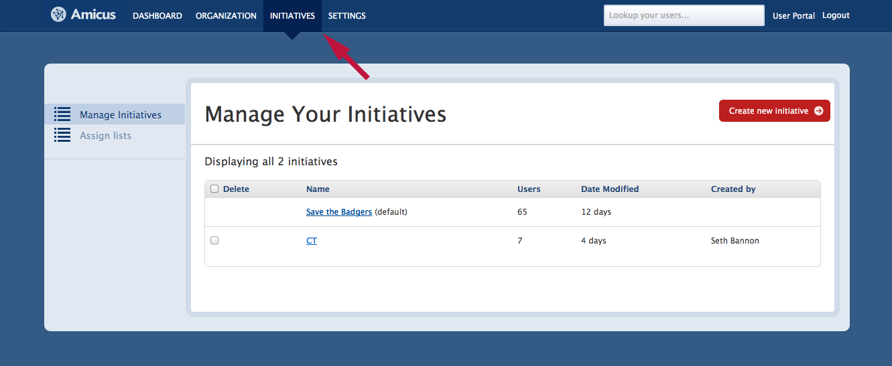Next, select the initiative you want to edit and click on its name to see more details.
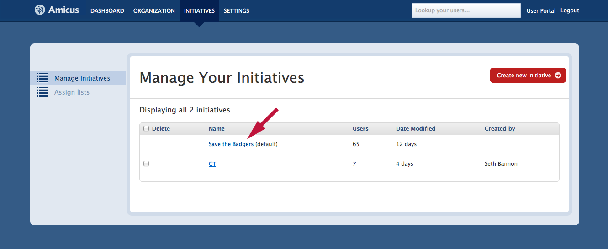On this page, you can change the the initiative's name and add a description. You can also set the location (by state) of the initiative. If you wish to set a default initiative for all new volunteers, simple check the "Make Default" box.
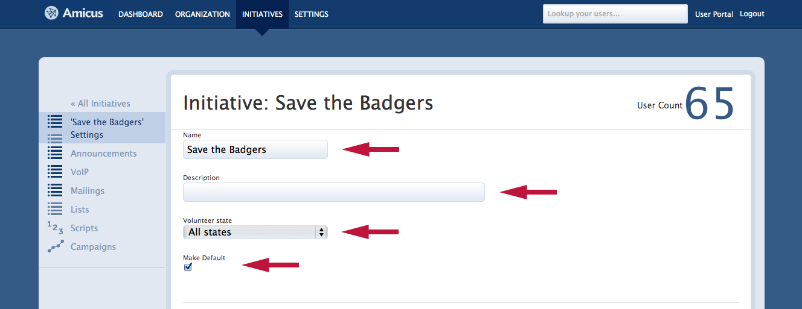Many of your volunteers may wish to send a written message to their friends asking for their support. It is easy to define custom message templates by simply filling in the text fields as shown below.
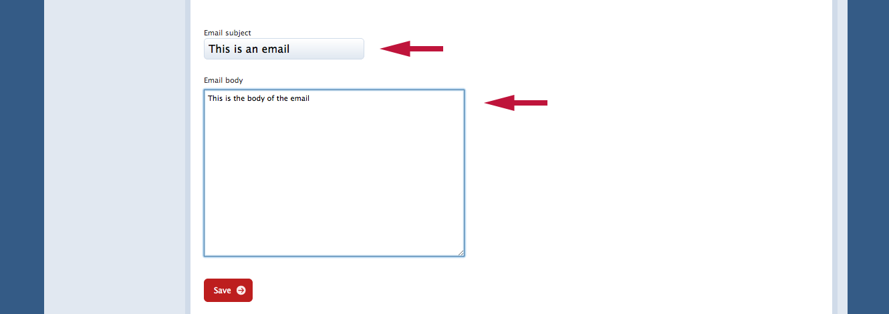Announcements are crucial to keeping your volunteers updated and motivated. To create or edit announcements, enter into the appropriate initiative and select "Announcements", then either click the red "New Announcement" at the top right to create a new one, or edit the title and content of existing announcements directly on this page.
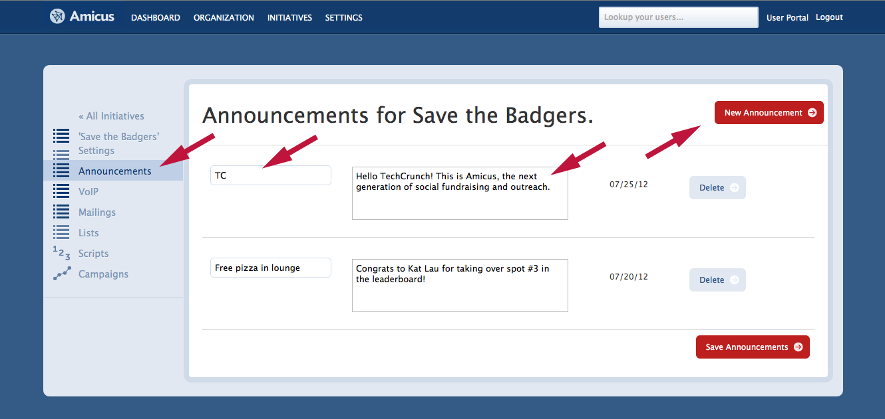VoIP settings allow you to control which phone numbers your volunteers are calling from. From the VoIP tab, you can purchase a new phone number. You may even specify that the number you are purchasing must have a specific set of digits or letters that correspond to digits. You can also simply authorize a number you already own in the field below. 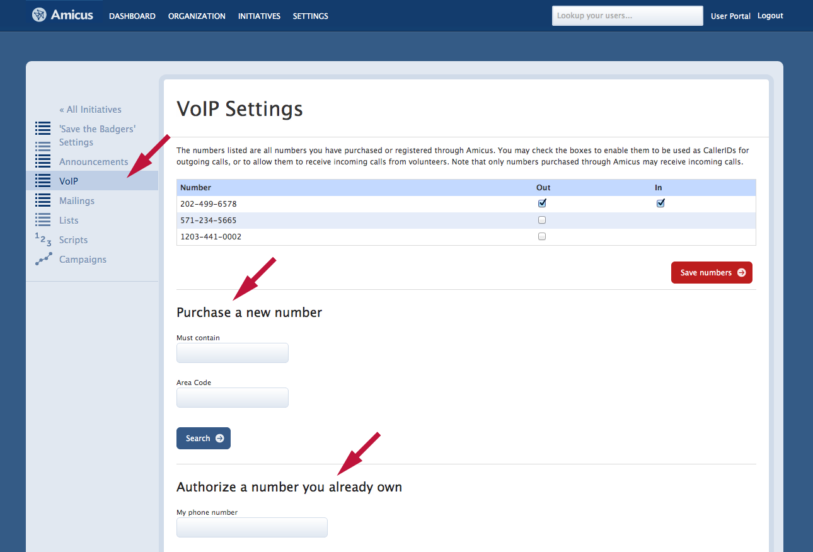
By clicking on the "Mailings" tab, you can set a default template for social mailings.
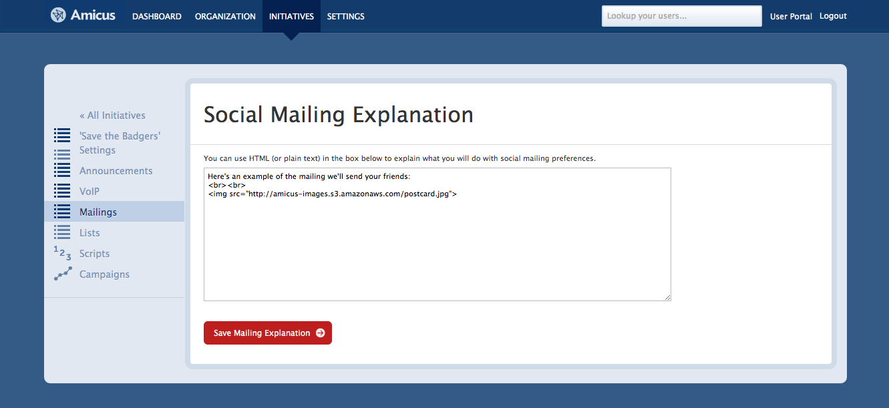By clicking on the "Scripts" tab, you will see all your current call scripts. Click on the name of any script to edit that one specifically.
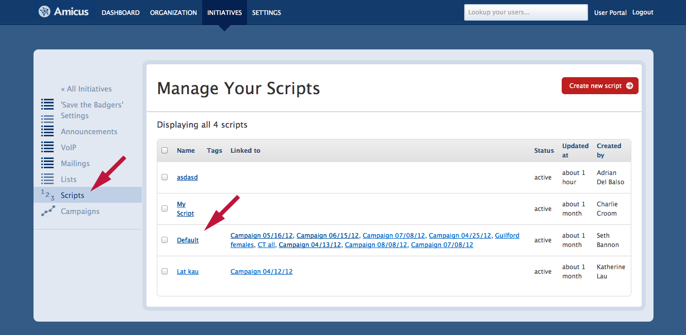On this screen, you may edit the script's template that will be shown in the call list to which this script is linked.
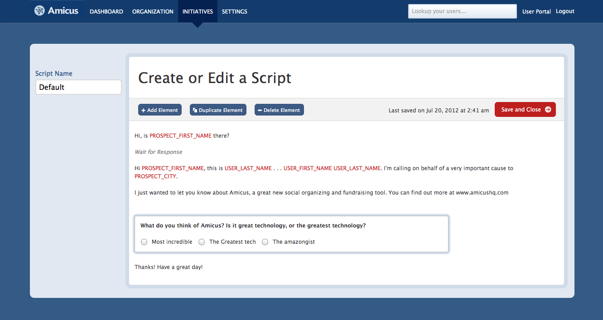To create a new campaign, click on "Create new campaign" button located at the top right in the "Campaigns" tab.
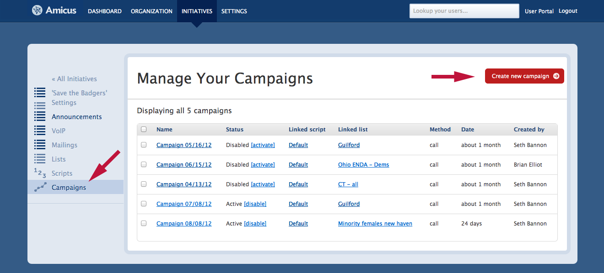On this screen, simply associate your new campaign with a list and a script that have already been created, then click "Save and close".
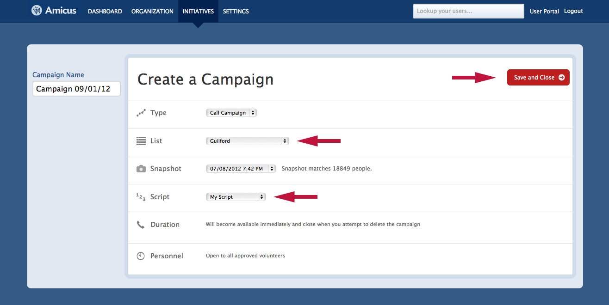Gamifying the outreach process for your volunteers is one of the easiest ways to make their efforts more effective. You can easily set goals for your volunteers by clicking on the "Settings" tab in the header, then selecting "Levels" from the menu at the left. 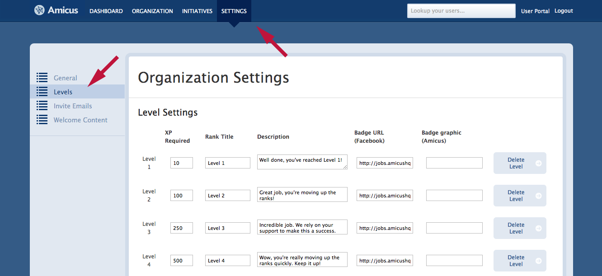
Scroll down this page, and you will find a section where you can define interactions that will earn your volunteers points. For example, you can award 15 points to a volunteer every time s/he saves a note during a call.
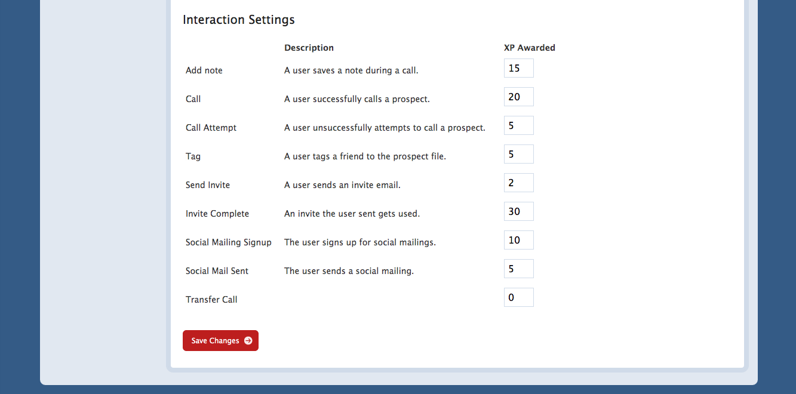To set a template for invite emails for your volunteers to help recruit others, simply click on the "Invite Emails" tab under "Settings". On this page, you can edit the subject and content of your invite emails.
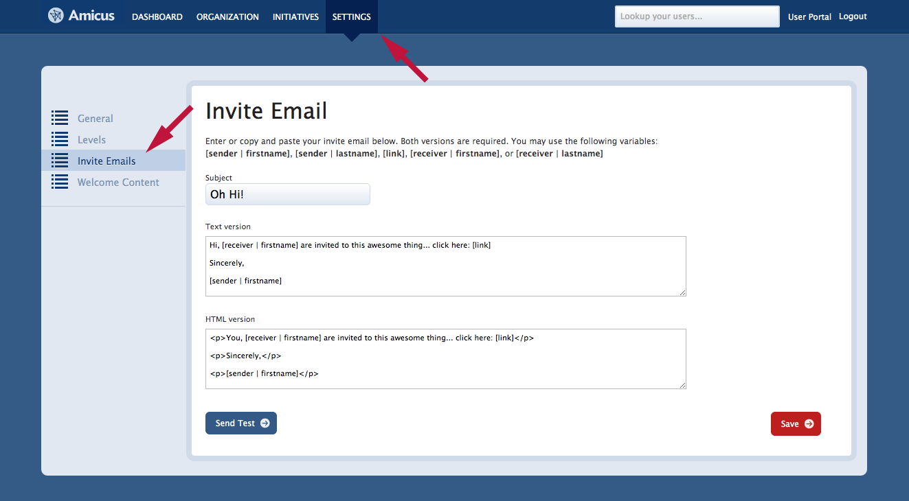Under "Settings", you can select the "Welcome Content" tab to write a custom welcome message that will be displayed on your main login page for volunteers.
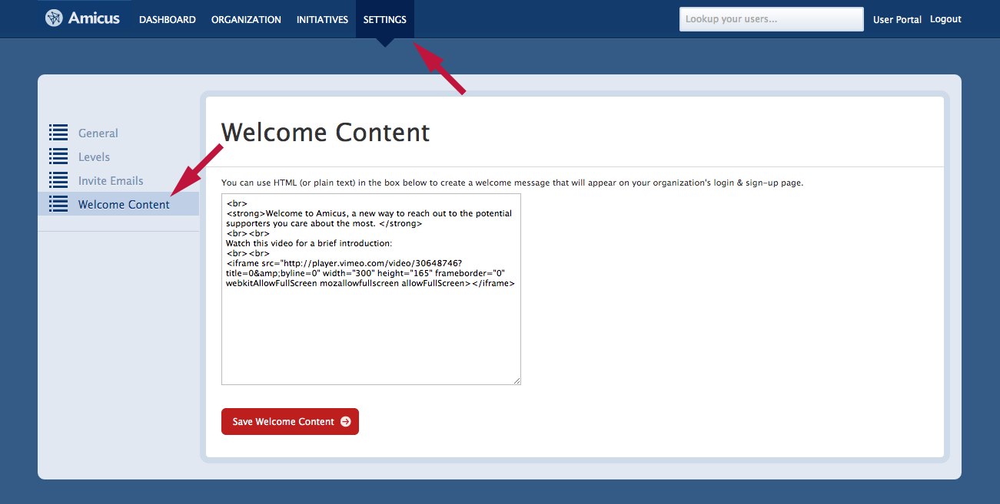